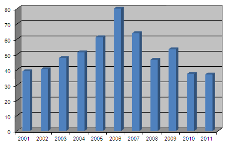

Hingston site usage statistic
The figure below shows the average number of hits, per week, on the main Hingston One-Name Study web page (up to December 2011). Some pages, typically Tree HD, The Vine Tree and the Odds and Ends pages, get more hits than this, but I have not analysed the data for these or any other individual pages. Please note that I have no way of knowing who has looked at the pages unless you choose to contact me. The high figure for 2006 was caused by over 700 hits in the month of January alone.

2nd April 2012. Chris Burgoyne